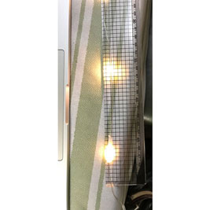
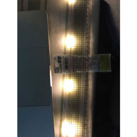
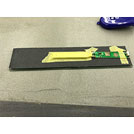
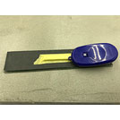
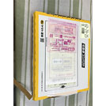
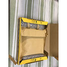
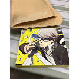

光る定規・過程
キッカケ
自分は、「光る定規」を作るきっかけになったのは親が暗いところでも使える定規がほしいと言ったからです。
親は定規を使ってきる作業を少し暗いところでするようで、そこでの作業の時暗さで定規が使いずらいというところからそういう定規が欲しいと思ったようです。
↓最初に作ったプロトタイプの「光る定規」

この時は50cmの定規で作ったのですが親からの要望で15cmに変更しました。
↓光っているとの写真

このプロトタイプの光からなるべく目に痛くない光でつくって欲しいとのお願いが出た。
↓プロトタイプ2

この時のプロトタイプは見た目度外視で機能面を考えながら作成していました
↓プロトタイプ2 電池入れ有り

この時のプロトタイプで1番の問題点は電池入れでした。次の時にはスマートにしたいと思ったのはこのプロトタイプをして感じたことでした。
この定規の多様性
今回作成した「光る定規」は個人的には様々なところで役に立つと思っています。
先ほど話した親の話しもそうですが、暗いところでもそうですが他にも光の当たり方によっても定規本体の陰によりストレスを感じることがあったりするので使うところを気にしなくていいというところがあります。
定規の使い方以外の使い方でとなると狭いところに突っ込むことができるライトにもなります。
他にも個人的に考えたのはカメラの照明がわりです。
定規だとあまり邪魔にならないので小さなものやジオラマなどの撮影には使えそうだと思いました。
「光る定規」・新着
個人的には今回のメルカリで出した「光る定規」はまだ試作段階だと思っていてまだこだわりたいところがあるので時間を見つけてはまた製作していく予定です。
次は既製品から応用していたライトにもこだわっていきたいと思っています。
メルカリを使ってみた
自分は今回の機会に「メルカリ」を実際に使ってみようと思い商品を「メルカリ」で購入してみました。
実際に使ってみると思っていたより簡単に取引できました。売り手と買い手のやりとりの部分は少し面倒に感じましたが通常店で売っている値段より安く買えることを考えたらこのくらいはいいのかなと思いました。
届いた商品は丁寧に梱包されていて初めての「メルカリ」ではとてもいい印象でした。
その後も2回利用したのですがそのうちの一つが少し商品に埃がかぶったままだったのが有りました。
そこでやはり良し悪しは人それぞれなのだなと感じました。
↓初めて利用した時に来た商品の写真


